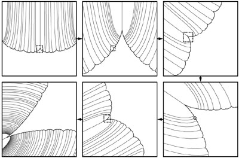
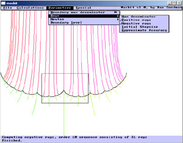

Mathematics
This page is for the relatively few people who may be interested in my former career in mathematics. The image is a series of zooms into the Maskit slice, clockwise from top left to bottom right, illustrating the phenomenon of spirals in the boundary of the Maskit slice.
Thesis
My PhD thesis title was
You can download the thesis (PDF, 1.8MB).
Software
I wrote some software to draw pictures of the Maskit slice, including pleating rays. I haven't looked at this code in a long time, so it may take some effort to get it running. The Windows GUI looks like this:
Available code:
- Mathematica version. Slower than the C++ version, but may be easier to use. Reproduces all the figures in my thesis, although some of the notebooks require data produced by the C++ version (large file, so not included here).
- C++ command line version. Should run on any platform.
- Windows GUI version. No idea if this still runs.